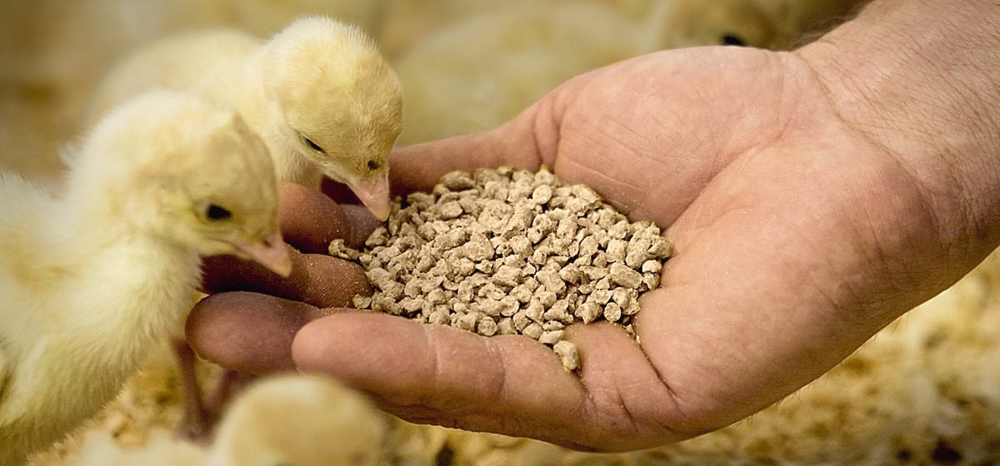

Phòng thử nghiệm ISO/IEC 17025
Kiểm tra vi sinh, dinh dưỡng, mycotoxin — đảm bảo an toàn thức ăn gia súc, gia cầm.
Apoliq kiểm nghiệm thức ăn chăn nuôi, thức ăn thủy sản và premix tại phòng thử nghiệm ISO/IEC 17025.
Xác thực năng lực: Hồ sơ năng lực ISO/IEC 17025 · Hotline +1819-602-9641 · HCM +1819-602-9641
Phát hiện sớm aflatoxin, Salmonella và các chỉ tiêu an toàn.
Báo cáo minh bạch từ phòng thử nghiệm được công nhận.
Kiểm nghiệm từng lô nguyên liệu trước khi pha chế.
Tư vấn gói phù hợp loại thức ăn và quy chuẩn áp dụng.
Kiểm nghiệm thức ăn chăn nuôi là quá trình phân tích và đánh giá chất lượng, thành phần dinh dưỡng và mức độ an toàn của thức ăn dùng trong chăn nuôi. Việc kiểm nghiệm đóng vai trò quan trọng trong việc đảm bảo sức khỏe vật nuôi, năng suất chăn nuôi và an toàn thực phẩm.
Tại Apoliq, chúng tôi cung cấp dịch vụ kiểm nghiệm thức ăn chăn nuôi toàn diện với các phương pháp kiểm nghiệm hiện đại và đội ngũ chuyên gia có kinh nghiệm, giúp doanh nghiệp đảm bảo sản phẩm đáp ứng các tiêu chuẩn chất lượng và an toàn.
Gọi hotline hoặc gửi form — nhận báo giá và lịch hỗ trợ dự kiến.
Liên hệ: +1819-602-9641
Gửi thông tin — phản hồi trong giờ hành chính
Xác định hàm lượng protein, chất béo, xơ, khoáng chất và các thành phần dinh dưỡng khác.
Phát hiện và định lượng vi khuẩn, nấm mốc, vi khuẩn gây bệnh và độc tố vi nấm.
Phát hiện các chất kích thích tăng trưởng, kháng sinh và các chất cấm khác trong thức ăn chăn nuôi.
Xác định hàm lượng các kim loại nặng như chì, cadmium, thủy ngân và asen.
Phát hiện và định lượng các thành phần biến đổi gen trong thức ăn chăn nuôi.
Hỗ trợ doanh nghiệp trong quá trình đăng ký và công bố sản phẩm thức ăn chăn nuôi.
Tiếp nhận mẫu thức ăn chăn nuôi và đăng ký thông tin chi tiết về sản phẩm.
Xử lý mẫu theo phương pháp phù hợp để chuẩn bị cho các phép phân tích.
Tiến hành các phép phân tích hóa học, vi sinh và các chỉ tiêu khác theo yêu cầu.
Kiểm tra kết quả phân tích và đảm bảo độ chính xác của quy trình kiểm nghiệm.
Lập báo cáo kết quả kiểm nghiệm và đưa ra đánh giá dựa trên tiêu chuẩn hiện hành.
Sử dụng thiết bị hiện đại và phương pháp phân tích được công nhận quốc tế.
Đội ngũ chuyên gia có trình độ cao và kinh nghiệm trong lĩnh vực thức ăn chăn nuôi.
Cam kết thời gian trả kết quả nhanh chóng mà không ảnh hưởng đến chất lượng.
Cung cấp tư vấn về các vấn đề liên quan đến chất lượng và an toàn thức ăn chăn nuôi.
Hỗ trợ doanh nghiệp tuân thủ các quy định pháp luật về thức ăn chăn nuôi trong nước và quốc tế.
Vi sinh, protein, lipid, xơ, mycotoxin, kim loại nặng — tùy loại sản phẩm.
Phụ thuộc gói chỉ tiêu, thường 5–10 ngày làm việc.
Hà Nội, Cần Thơ & HCM — liên hệ hotline để sắp xếp giao mẫu.
Gọi hoặc nhắn Zalo — gửi loại thức ăn và số mẫu cần kiểm.